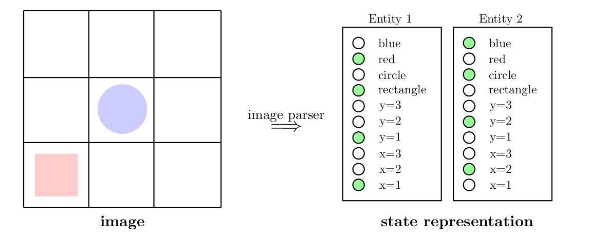

Kansky et al. (2017) showed remarkable results of zero-shot transfer in several variations of Breakout by introducing Schema Networks as a generative model for object-oriented reinforcement learning and planning. This model incorporates objects as entities, represents local cause-effect relationships including one or more entities and is based on Probabilistic Graphical Models (PGMs). Due to its foundation in PGMs, Schema Networks support flexible inference and search strategies for planning.
Model Description
Building upon the ideas of object-oriented Markov decision processes (OO-MDPs), states are represented as a list of entities where each entity can be understood as a different instantiation from the same class (i.e., all entities share the same attributes). Additionally, the attributes, actions and rewards are binarized using discretization and one-hot encoding, see image below. This representation comes from a handcrafted image parser with the handwavy argument that in practice a vision module could be responsible for this task.
|  |
|---|
| Exemplary State Representation in a Schema Network. A handcrafted image parser converts an image (left) into the state representation (right), where filled green circles indicate that the binary variable is set to True. |
Kansky et al. (2017) define 53 attributes for each entity in the Breakout domain (21 for bricks, 30 for the paddle, 1 for walls, 1 for the ball). However, they do not elaborate on what these attributes describe exactly. Furthermore, each pixel is identified as a part of an object and assigned the corresponding attributes. Accordingly, their representation could rather be understood as a 53-channel image where each entry can either be 0 or 1, e.g., one layer showing the walls. In this form, the entity-based state representation can also be provided to other algorithms such as A3C.
Similiar to OO-MDPs, state transitions are determined by a change of entity-attributes. However, due to the specific representation in Schema Networks, entity-attributes can only be active or inactive (with an associated probability). An attribute becomes activated if a grounded schema1 is active. Grounded schemas can include a variable size of entity attributes from a variable number of entities and may include one or more actions. Thus, these schemas can be interpreted as local cause-effect relationships. Formally, a grounded schema \(\phi^{k}\) is a binary variable that becomes activated via a probabilistic AND over the binary variables \(v_1, \dots, v_n\) that are included in it:
\[ \begin{align} \phi^{k} = \text{AND} (v_1, \dots, v_n) = \prod_{i=1}^n P(v_i = 1). \end{align} \]
The binary variables \(v_1, \dots, v_n\) may be entity-attributes2 or actions, see image below.
Multiple grounded schemas can predict the same attribute which is formalized through an OR factor, e.g., let \(\alpha_{i, j}^{(t+1)}\) denote the \(j^{th}\) attribute of the \(i^{th}\) entity at time \(t+1\) and assume there are \(n\) grounded schemas that predict this entity attribute. Then, this formalizes into
\[ \begin{align} \alpha_{i,j}^{(t+1)} = \text{OR} (\phi_{i,j}^{1}, \dots, \phi_{i, j}^{n}) = 1 - \prod_{k=1}^n \big(1 - P(\phi_{i,j}^k)\big). \end{align} \]
Kansky et al. (2017) divide entity attributes into two classes: * Positional Attributes: These attributes correspond to discrete positions. * Non-Positional Attributes: The semantic meaning of those attributes is unknown to the model such that they may encode completely different things, e.g., color and shape.
A self-transition variable is introduced for positional attributes which represents the probability that a position attribute will remain active in the next time step when no schema predicts a change from that position. Note that through this mechanism, they include the bias that an object cannot be at multiple positions at the same time.
 |
|---|
| Transition dynamics in Schema Networks are governed by changes in entity-attributes due to activated grounded schemas. In this example all relevant gates are shown to illustrate the state transition dynamics via this mechanics. Note that there are two schemas that predict the same behavior, i.e., only one input in OR is necessary to activate \(y=1\). |
Formally, a self transition is a NOR factor over the grounded schemas that predict a change from a position attribute (i.e., the grounded schemas that predict towards a different position) combined with an AND factor over the NOR factor and the position attribute at the current time step. E.g., let \(\alpha_{i,j}^{t}\) denote the \(j^{th}\) position attribute of the the \(i^{th}\) entity at time \(t\) and assume that the set \(\{\phi^1, \dots, \phi^{n} \}\) includes all schemas predicting towards a different position of that entity. Then, the self-transition is formalized as follows
\[ \begin{align} \Lambda_{i,j}^{t+1} = \text{AND} \big(\lnot \phi^{1}, \dots, \lnot \phi^{n}, \alpha_{i,j}^{t} \big). \end{align} \]
Finally, the transition function in this model can be factorized as
\[ \begin{align} T\left(s^{(t+1)} | s^{(t)}, a^{(t)}\right) = \prod_{i=1}^N \prod_{j=1}^M T_{i, j} \left(s_{i, j}^{(t+1)}|s^{(t)}, a^{(t)}\right), \end{align} \]
where \(T_{i,j}\) denotes the transition probability of the \(j^{th}\) attribute of the \(i^{th}\) entity towards its value defined in \(s_{i,j}^{(t+1)}\). The entity attribute \(s_{i,j}^{(t+1)}\) is by definition activated if one of its grounded schema is active or if a self-transition occured, thus the entity-attribute transition probability is defined as
\[ \begin{align} T_{i,j} \left( s_{i,j}^{(t+1)} | s^{(t)}, a^{(t)}\right) = \text{OR}\left( \phi^{k_1}, \dots, \phi^{k_Q}, \Lambda_{i,j} \right), \end{align} \]
where \(\Lambda_{i,j}\) denotes the self-transition variable of \(s_{i,j}\) and \(k_1, \dots, k_Q\) are the indices of all grounded schemas that predict \(s_{i,j}\). Note that although all variables are defined as binary variables, this model could still be used for non-deterministic environments.
To increase the generality of their model such that the attribute change of two entities is described by the same schema, Kansky et al. (2017) introduce the term ungrounded schema or template. An ungrounded schema can be understood as template for specific grounded schemas, i.e., it describes a grounded schema where the included entity-attributes are assigned relative to the position of the entity-attribute that should be predicted.
Learning the Model
The Schema Network is essentially a factor graph that is aimed to be a probabilistic simulator of the game environment using the aforementioned representation. Assuming that the environment dynamics can be represented by some Schema Network, learning the model comes down to structure learning in graphical models. Kansky et al. (2017) preprocess a sequence of observations (dataset of state-action-reward-new state tuples over time) into a convenient representation, define a NP-hard optimization problem based on this representation as the optimal solution and retrieve the schemas (and Schema Network) through solving the optimization problem approximately using linear programming (LP) relaxations.
Notation
Let \(\alpha\_{i,j}^{(t)}\) denote the \(j^{th}\) attribute of the \(i^{th}\) entity at time \(t\) and let \(\textbf{e}\_i^{(t)} \in \\{0, 1\\}^{M}\) be an
\(M\)-dimensional binary vector representing all entity-attributes values of the \(i^{th}\) entity at time \(t\), i.e., \(\textbf{e}\_i^{(t)} = \begin{bmatrix}\alpha\_{i,1}^{(t)} & \dots & \alpha\_{i,M}^{(t)} \end{bmatrix}^{\text{T}}\) where \(M\) denotes the number of entity-attributes.
Let \(\boldsymbol{\beta}\_{i}^{(t)}\in \\{0,1\\}^E\) be a row vector representing the attribute values of the \(i^{th}\) entity and the entity-attributes of the \(R-1\) (fixed radius) spatial neighbors, i.e., \(\boldsymbol{\beta}_{i}^{(t)} = \begin{bmatrix} \textbf{e}\_{i}^{(t)} & \textbf{e}\_{i+1}^{(t)} & \dots & \textbf{e}\_{R-1}^{(t)} \end{bmatrix}\) has length \(E=M(R-1) + M = MR\).
Suppose there are \(N\) entities observed for \(\tau\) timesteps. Then, let \(\textbf{X}\in\\{0,1\\}^{D\times E}\) be a binary matrix where each row consists of a \(\boldsymbol{\beta}\_{i}^{(t)}\) and there are \(D=N\cdot \tau\) rows (all entities and time steps). Similarly, let \(\textbf{y}\in\\{0, 1\\}^D\) be a binary vector where each entry refers to the future attribute value \(\alpha\_{i,j}^{(t+1)}\) corresonding to the a row of \(\textbf{X}\) with entity \(i\) and time \(t\), i.e.,
\[ \begin{align*} \textbf{X} &= \begin{bmatrix} \begin{bmatrix} \boldsymbol{\beta}_{1}^{(1)} & \dots & \boldsymbol{\beta}_{N}^{(1)} \end{bmatrix}^{\text{T}} \\ \vdots\\ \begin{bmatrix} \boldsymbol{\beta}_{1}^{(\tau)} & \dots & \boldsymbol{\beta}_{N}^{(\tau)} \end{bmatrix}^{\text{T}} \end{bmatrix} , \quad \textbf{y} = \begin{bmatrix} \begin{bmatrix} \alpha_{1,j}^{(2)} & \dots & \alpha_{N,j}^{(2)} \end{bmatrix}^{\text{T}} \\ \vdots \\ \begin{bmatrix} \alpha_{1,j}^{(\tau+1)} & \dots & \alpha_{N,j}^{(\tau+1)} \end{bmatrix}^{\text{T}} \end{bmatrix} \end{align*} \]
Learning Problem
The goal is to predict \(\alpha\_{i,j}^{(t+1)}\) based on the entity-attributes of itself and its spatial neighbors. Using the introduced notation, the learning problem can be defined as follows
\[ \textbf{y} = f_{\textbf{W}} (\textbf{X}) = \overline{\overline{\textbf{X}} \textbf{W}} \textbf{1}, \]
where \(f\_{\textbf{W}}\) denotes the desired function of ungrounded schemas which is applied row-wise to the argument \(\textbf{X}\) to produce either active or inactive grounded schemas. \(f\_{\textbf{W}}\) is parametrized by a binary matrix \(\textbf{W} \in \\{0, 1\\}^{E \times L}\) with each column representing one ungrounded schema for a maximum of \(L\) schemas. Each element that is set to 1 in a column of \(\textbf{W}\) indicates that for this schema the corresponding input attribute (from \(\textbf{X}\)) is necessary for an activated grounded schema. On the right-hand side of the equation above all variables and operations follow Boolean logic: addition corresponds to ORing and overlining to negation.
E.g., let \(\textbf{w}\_i = \begin{bmatrix} w\_{i_1} & \dots & w\_{i_ E}\end{bmatrix}^{\text{T}}\) denote the \(i^{th}\) column of \(\hspace{0.1cm}\textbf{W}\) and \(\textbf{x}_r = \begin{bmatrix} x\_{r_1} & \dots & x\_{r_E} \end{bmatrix}\) be the \(r^{th}\) row of \(\hspace{0.1cm}\textbf{X}\). Then, the (dot) product of the two vectors leads to
\[ \begin{align} \textbf{x}_r \textbf{w}_i = \sum_{k=1}^{E} x_{r_k} \cdot w_{i_k} = \text{OR} \left( x_{r_1} w_{i_1}, \dots, x_{r_E} w_{i_E} \right), \end{align} \]
in this form the corresponding grounded schema would be activated as soon as one precondition is satisfied, i.e., as soon as for one \(w\_{i_j} = 1\) the corresponding attribute variable is also \(x\_{i_j}=1\).
A grounded schema \(\phi\) is defined through a logical AND over the necessary attributes (i.e., all preconditions)3
\[ \begin{align} \phi = \text{AND}\left( \{x_{r_j} \mid \forall j: w_{i_j} = 1 \} \right) = \text{Not} \left( \text{OR} \left(\text{Not } \{x_{r_j} \mid \forall j: w_{i_j} = 1 \} \right) \right) = \overline{\overline{\textbf{x}}_r \textbf{w}_i}. \end{align} \]
This equation states how one individual schema (\(\textbf{w}_{i}\)) is applied to one attribute vector \(\textbf{x}_R\). The first equation of this section summarizes this result into a matrix-matrix multiplication.
At the end all outputs of each individual schema are ORed to produce the final prediction for each attribute (corresponding to the provided attribute vector). This is done through multiplication with the identity tensor \(\textbf{1} \in \\{1\\}^{L \times D}\). Remind that this is in alignment with the entity-attribute transition probability definition for non-positional attributes
\[ \begin{align} T_{i,j} \left( s_{i,j}^{(t+1)} | s^{(t)}, a^{(t)}\right) = \text{OR}\left( \phi^{k_1}, \dots, \phi^{k_Q}\right) \end{align} \]
As stated above, for positional attributes a self-transition \(\Lambda_{i,j}\) is added to allow these attributes to remain active when no change is predicted. Unfortunately, Kansky et al. (2017) did not elaborate on self-transitions in the learning problem. Thus, we can only guess how they are included. My idea would be to preprocess the data such that only positional attributes that changed (either from 0 to 1 or vice versa) are included in the learning problem. In the prediction phase, we then simply group all positional grounded schemas and apply the self-transition as a post-processing step.
Objective Function
As there might be multiple Schemas that explain certain behaviors, the objective function is aimed to minimize the prediction error while keeping ungrounded schemas as simple as possible4:
\[ \begin{align} \min_{\textbf{W}} J(\textbf{W}) = \min_{\textbf{W}} \underbrace{\frac {1}{D} \cdot \Bigg| \textbf{y} - f_{\textbf{W}} (\textbf{X}) \Bigg|_1 }_{\text{Prediction Error}}+ \underbrace{C \cdot \Bigg| \textbf{W} \Bigg|_1}_{\text{Model Complexity}}, \end{align} \]
where \(C\) is a hyperparameter that can be used to control the trade-off between the complexity of the model and the accuracy of the predictions. This is a NP-hard optimization problem, since \(\textbf{W}\in \\{0,1\\}^{E\times L}\) is a binary matrix. Furthermore, the search space is combinatorially large, i.e., there are \(2^{E \cdot L}\) possible realizations of \(\textbf{W}\). Hence, finding the optimal solution \(\textbf{W}^{*}\) is infeasible (for larger environments such as Breakout).
Schema Learning
Kansky et al. (2017) search for an approximate solution with the desired features (low prediction error and low model complexity) using a greedy algorithm of linear programming (LP) relaxations. This algorithm works as follows
Start with an empty set of schemas, i.e., \(\textbf{W} = \textbf{0}\).
Greedily select a schema \(\textbf{w}\) that perfectly predicts a cluster of input samples:
Randomly select an input sample \(\textbf{x}\_n\) for which \(y_n = 1\) and \(f\_{\textbf{W}} (\textbf{x}\_n) = 0\).
Put sample in the set
solved, then solve the following LP\[ \begin{align} \begin{split} &\max_{\textbf{w}\in \{0,1\}^D} \sum_{n: y_n = 1} \overline{ \overline{\textbf{x}}_n \textbf{w}} = \min_{\textbf{w} \in \{0, 1\}^{D}} \sum (1 - {\textbf{x}}_n \textbf{w}) \\ &\quad \quad \text{s.t. } \forall_{n:y_n=0} \quad (1 - \textbf{x}_n) \textbf{w} > 1 \qquad \text{(no false alarms)}\\ &\qquad \quad \hspace{0.3cm} \forall_{n\in \text{solved}} \hspace{0.2cm} (1-\textbf{x}_n) \textbf{w} = 0 \qquad \text{(active grounded schema)} \end{split} \end{align} \]
Update the
solvedset, i.e., put all samples in for which \((1-\textbf{x}_n) \textbf{w} = 0\) in thesolvedset.
Simplify resulting schema by making \(\textbf{w}\) as sparse as possible while keeping the predictions correct without introducing false alarms:
\[\begin{align} \begin{split} &\min_{\textbf{w} \in \{0, 1\}^D} \textbf{w}^{\text{T}} \textbf{1} \\ &\quad \quad \text{s.t. } \forall_{n:y_n=0} \quad (1 - \textbf{x}_n) \textbf{w} > 1\\ &\qquad \quad \hspace{0.3cm} \forall_{n\in \text{solved}} \hspace{0.2cm} (1-\textbf{x}_n) \textbf{w} = 0 \end{split} \end{align}\]
Binarize \(\textbf{w}\)
Planning
TODO: Summarize planning
Drawbacks
- based on specific and exact representation \(\Rightarrow\) not end-to-end
- blow up of entity attributes, since:
- binarized attributes using discretization and one-hot encoding
- all entities share the same set of attributes
- image parser needs to know the whole attribute space beforehand
Note: also the reward space needs to be defined beforehand. - learning algorithm is only capable of learning deterministic environments
Footnotes
A grounded schema in Schema Networks is similar to a rule in OO-MDP terms. Each attribute may have several grounded schemas. When one of those schemas is active (active effect condition in OO-MDP terms), the corresponding attribute is actived (set to True) in the next step.↩︎
Kansky et al. (2017) refer to the entity attributes in the binary variables \(v_1, \dots, v_n\) of a grounded schema as entity-attribute preconditions. This terminology relates attributes to preconditions, since the actual condition (i.e., grounded schema) is only active iff all preconditions are active.↩︎
In Boolean logic, De Morgan’s law states that \(\text{AND} \Big(A, B\Big) =\text{NOT} \Big( \text{OR} \big(\text{NOT } A, \text{NOT } B \big)\Big)\).↩︎
Occam’s razor (law of parsimony) states that simplest solution is most likely the right one.↩︎